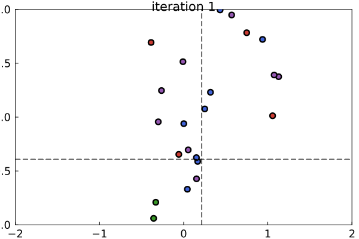

DifferentialEvolutionMCMC.jl
Welcome to DifferentialEvolutionMCMC.jl. With this package, you can perform Bayesian parameter estimation using Differential Evolution MCMC (DEMCMC), and perform optimization using the basic DE algorithm Please see the navigation panel on the left for information pertaining to the API and runnable examples.
How Does it Work?
Intuition
The basic idea behind DEMCMC is that a group of interacting particles traverse the parameter space and share information about the joint posterior distribution of model parameters. Across many iterations, the samples obtained from the particles will approximate the posterior distribution. The image below illustrates how the particles sample from the posterior distribution of $\mu$ and $\sigma$ of a simple Gaussian model. In this example, five observations were sampled from a Gaussian distribution with $\mu=0$ and $\sigma=1.0$. The DEMCMC sampler consists of four color coded groups of particles which operate semi-independently from each other. Note that the dashed lines represent the maximum likelihood estimates. The particles cluster near the maximum likelihood estimates because the true parameters are close the center of the prior distributions.

Technical Description
This section provides a more technical explanation of the basic algorithm. Please see the references below for more details. More formally, a particle $p \in [1,2,\dots, P]$ is a vector of $n$ parameters in a $\mathbb{R}^n$ parameter space defined as:
\[\Theta_p = [\theta_{p,1},\theta_{p,2},\dots \theta_{p,n}].\]
On each iteration $i$, a new position for each particle $p$ is proposed by adding the weighted difference of two randomly selected particles $j,k$ to particle $p$ along with a small amount of noise. Formally, the proposal is given by:
\[\Theta_p^\prime = \Theta_p + \gamma (\Theta_j - \Theta_k) + b,\]
where $b \sim \mathrm{uniform}(-\epsilon, \epsilon)$. DEMCMC uses the difference between randomly selected particles to leverage approximate derivatives in the proposal process. The proposal is accepted according to the Metropolis-Hastings rule whereby the proposal is always accepted if its log likelihood is greater than that of the current position, but is accepted proportionally to the ratio of log likelihoods otherwise.
References
Ter Braak, C. J. (2006). A Markov Chain Monte Carlo version of the genetic algorithm Differential Evolution: easy Bayesian computing for real parameter spaces. Statistics and Computing, 16, 239-249.
Ter Braak, C. J., & Vrugt, J. A. (2008). Differential evolution Markov chain with snooker updater and fewer chains. Statistics and Computing, 18, 435-446.